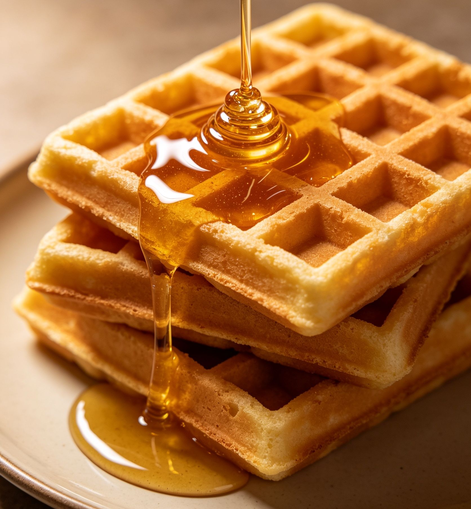

Resep Waffle Crispy: Perpaduan Sempurna Madu, Keju, Krim, & Ceri!
Siapa yang bisa menolak kelezatan waffle hangat di pagi hari atau sebagai teman minum teh sore? Waffle memang makanan yang sangat versatile. Bisa manis, bisa gurih, tergantung selera.

Hari ini, aku mau berbagi resep waffle andalan yang crispy di luar namun lembut di dalam. Yang bikin spesial? Kita akan berkreasi dengan topping! Bayangkan kombinasi madu yang manis alami, keju gurih yang meleleh, krim lembut, dan kesegaran ceri diatas kue waffle yang memikat.
Yuk, langsung kita masuk dapur!
Bahan-Bahan Waffle (Adonan Dasar)
Sebelum bahas topping, kita bikin waffle yang sempurna dulu ya. Resep ini pakai metode pemisahan telur biar teksturnya lebih fluffy dan renyah.
Bahan Kering:
- 200 gram tepung terigu serbaguna
- 50 gram gula pasir (bisa dikurangi kalau topping anda sudah manis)
- 1 sdt baking powder
- 1/4 sdt baking soda
- Sejumput garam halus
Bahan Basah:
- 2 butir telur (pisahkan kuning dan putihnya)
- 200 ml susu cair
- 50 gram mentega leleh (bisa diganti minyak goreng atau margarin, tapi mentega lebih wangi)
- 1 sdt vanilla extract
Langkah-Langkah Membuat
- Campur Bahan Kering: Dalam satu mangkuk besar, ayak lalu campurkan tepung terigu, gula, baking powder, baking soda, dan garam halus. Aduk rata.
- Adonan Basah: Buat lubang di tengah campuran tepung. Masukkan kuning telur, susu cair, mentega leleh, dan vanilla. Aduk perlahan hingga tercampur rata dan tidak ada yang menggumpal. Jangan diaduk terlalu kuat agar nanti wafflenya tidak keras.
- Kocok Putih Telur: Di mangkok terpisah, kocok putih telur dengan mixer kecepatan tinggi hingga mengembang dan berbusa. Ini rahasia waffle yang ringan!
- Gabungkan: Masukkan putih telur kocok ke dalam adonan tepung secara bertahap. Aduk dengan spatula dengan teknik folding (aduk dari bawah ke atas) hingga tercampur rata.
- Panggang: Panaskan waffle iron (pembuat waffle). Olesi sedikit mentega. Tuang adonan secukupnya, panggang hingga matang dan berwarna emas kecoklatan (sekitar 3-5 menit tergantung alat).
The Fun Part: Ide Topping "Banget"!
Nah, ini bagian yang paling ditunggu. Waffle polos sudah siap, sekarang saatnya kita berdandan. Berikut ide topping kombinasi yang wajib anda coba:
1. The Classic Sweet & Salty (Madu & Keju)
Ini kombinasi yang nggak bisa salah. Kontras rasa manis dan gurih ini bikin nagih.
- Cara pakai:
- Siram waffle hangat dengan madu secukupnya (biar meresap ke pori-pori waffle).
- Parut keju cheddar atau keju mozzarella di atasnya. Panas waffle akan sedikit melelehkan kejunya.
- Tips: Tambahkan sedikit kayu manis bubuk buat aroma yang homey.
2. Berry Creamy Dream (Krim & Ceri)
Kalau anda suka sensasi fancy dan kesegaran buah, ini pilihannya.
- Cara pakai:
- Oleskan whipped cream (krim kocok) yang dingin di atas waffle.
- Tambahkan ceri segar atau ceri kaleng di atas krim.
- Untuk sentuhan akhir, bisa ditaburkan gula halus atau siraman sedikit madu.
3. The Ultimate Combo (Semua Jadi Satu!)
Kenapa harus pilih-pilih? Gabungkan semuanya!
- Susunan:
- Letakkan waffle di piring.
- Siram dengan madu.
- Tambahkan satu scoop es krim vanilla, biar makin rich).
- Letakkan krim kocok di sampingnya.
- Taburi keju parut dan ceri di atas es krim/krim.
Hasilnya? Ledakan rasa di mulut!
4. Ide Topping Lainnya (Variasi)
Bosan dengan yang di atas? Coba kreasi ini:
- Chocolate Lover: Siram dengan selai cokelat (Nutella) dan taburkan meses/kacang almond cincang.
- Pisang Caramel: Iris pisang, susun di atas waffle, siram dengan saus caramel atau condensed milk.
- Savory Style: Telur mata sapi, dan sedikit saus mayones pedas. Cocok buat penggemar makanan gurih!
Tips Penyajian Biar Enak dan Menarik
- Suhu adalah Kunci: Sajikan waffle selagi hangat. Teksturnya akan jauh lebih renyah dibandingkan sudah dingin.
- Estetika: Gunakan piring warna putih polos biar warna topping madu, keju, dan ceri terlihat pop dan menarik untuk di-foto.
- Fresh Fruit: Selain ceri, anda bisa pakai blueberry, strawberry, atau irisan kiwi buat keseimbangan rasa asam-manis.
Nah, itu dia resep waffle simpel tapi berasa cantik dengan topping favorit. Anda lebih suka kombinasi madu-keju yang klasik, atau yang penuh buah seperti krim dan ceri?
Coba resep ini di rumah dan semoga berhasil. Selamat mencoba!